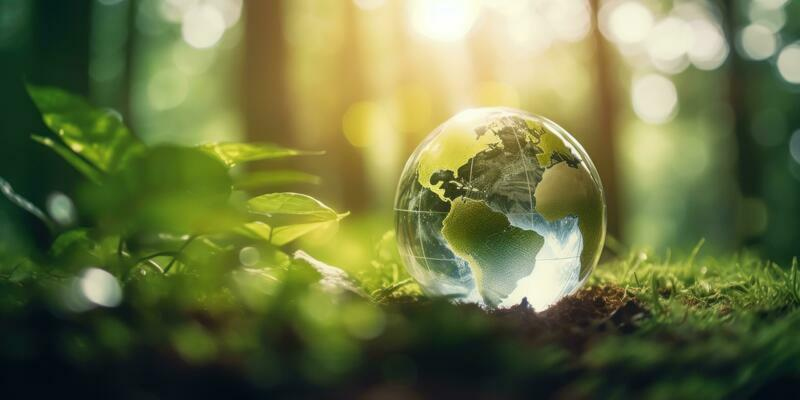

Publicado em 16 de novembro de 2023
A tecnologia tem se mostrado uma ferramenta poderosa na preservação do meio ambiente. Com o uso de sensores e dispositivos inteligentes, é possível monitorar e controlar o consumo de recursos naturais, como água e energia, de forma mais eficiente. Além disso, a tecnologia também permite o desenvolvimento de sistemas de reciclagem e tratamento de resíduos mais eficientes, reduzindo o impacto ambiental.
Os aplicativos estão capacitando os defensores ambientais, pesquisadores e o público em geral. Desde ferramentas de monitoramento em tempo real até aplicativos educacionais que promovem práticas sustentáveis, a tecnologia está desempenhando um papel central na conscientização e na ação da proteção ambiental.
Em um mundo cada vez mais digital, a tecnologia desempenha um papel crucial na preservação do nosso planeta, os apps exploram o papel essencial desempenhado por aplicações ambientais com o objetivo de aumentar a conscientização e a conservação de ecossistemas.
Agora que você viu sobre a importancia dos apps para o meio ambiente, que tal começar a usar estes apps para ajudar a natureza?, contamos com você!.
Obrigado por ler este blog sobre o meio ambiente.